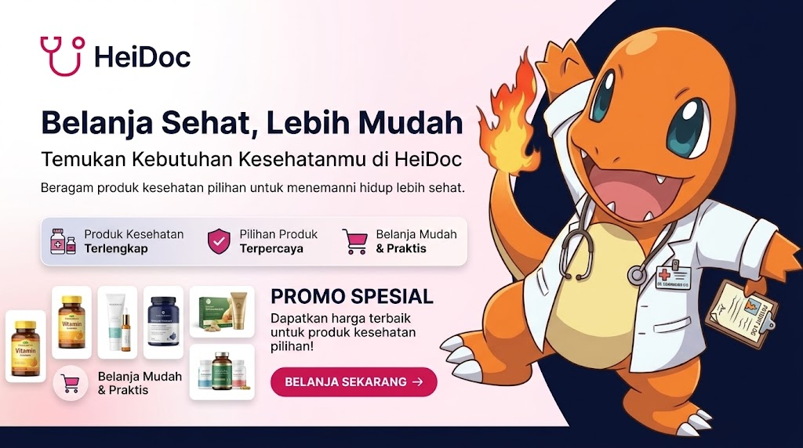
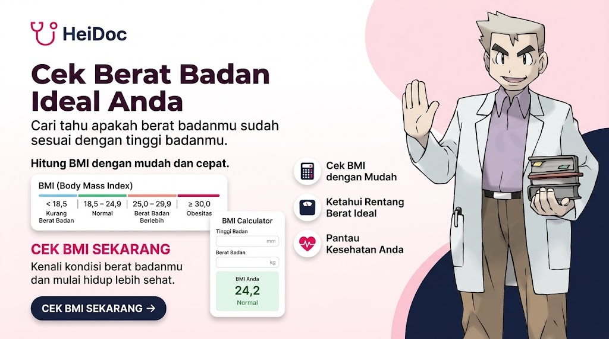

Selamat Datang
Konsultasi dokter, beli obat, dan cek kesehatan dalam satu aplikasi.


Dokter Kulit
Dokter Umum
Dokter Anak
Dokter Gigi
Pelajari cara menjaga imun tubuh agar tetap kuat setiap hari.
Kenali kebutuhan vitamin harianmu dan cara memilih suplemen.
Aktivitas fisik sederhana yang bisa meningkatkan mood.